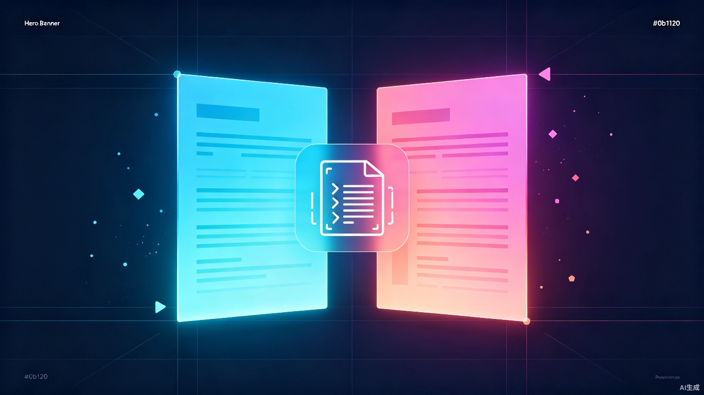

程序员简历的双视角面试助手
一份简历，两种审视。
让候选人看清自己的「面试题库」，让面试官拿到精准的「追问清单」。
同一套 AI，打通求职两端的信息黑箱。
市面上的简历工具几乎只服务一端，但候选人和面试官看的其实是同一份简历、同一套技术经历。
「一份简历在候选人眼里是我会被问什么，
在面试官眼里是我该问什么。
把这两端打通，比单做一边更有用。」
一个 Web 工具，上传简历 PDF 或截图后，在「候选人模式」与「面试官模式」之间一键切换。
支持 PDF 或截图上传，AI 自动解析文本与技术关键词
在「候选人模式」和「面试官模式」之间自由切换视角
分别生成两份完全不同的分析报告，针对性备战或面试
从面试官视角审视你的简历，提前暴露风险点。
面试前 1 分钟生成追问清单，让每场面试都有章法。
场景：投简历前自检、面试前一晚针对岗位做最后准备
痛点：简历里的模糊表述自己写时不觉察，被追问「QPS 多少」「为什么不用本地缓存」时直接卡壳；不知道哪些经历能扛住深挖，哪些只是一句空话。
场景：面试开始前 5 分钟快速扫一遍简历，拿到现成追问清单
痛点：日程排满时来不及细看简历，开场只能随机挑项目问；问到不熟悉的技术栈还得现场编问题；不同面试官之间评估口径差异大。
不是替代人做判断，而是在关键节点上压缩准备时间、提升信息对称度。
从「翻八股文 + 自己猜」压缩到 10 分钟出一份针对自己简历的专属题库和回答思路
单场面试准备从 15 分钟降到 1 分钟，且追问质量稳定，不再因状态差而把面试问成闲聊
普通候选人也能拿到「面试官视角」的审视报告，缩短与有内推、有学长带的人之间的信息差
让求职这件事更对称。
技术面试长期存在严重的信息不对称：有人靠学长内推提前知道会问什么，有人只能在黑箱里撞运气。简历 AB 面试图用同一套 AI 能力，把「面试官视角」开放给每一个普通候选人。
同时，它也帮中小公司的兼职面试官把面试做得更专业 —— 减少因为「问得不好」而误判候选人的情况，让技术评估回归能力本身。
最终目标：让简历不再是自说自话的文档，而是一场面试的预演。
打通候选人与面试官之间的信息黑箱，让每一次面试都准备充分、问有章法。